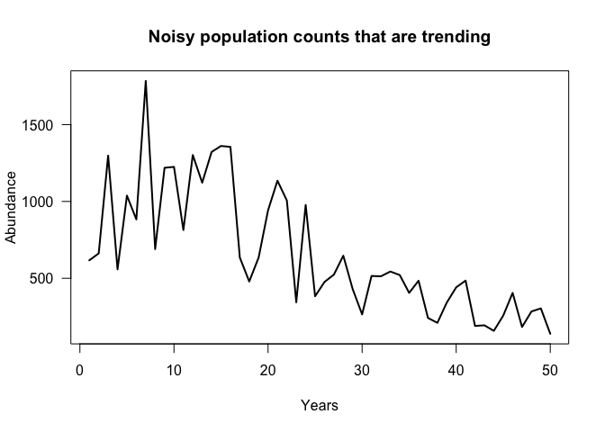

Population abundances tend to vary year to year. This variation can make it make it hard detect a change and hard to quantify exactly what that change is.
Bayesian time-series analysis can help us quantify a decline and put uncertainty bounds on it too. Here I will use the R-INLA package to fit a time-series model to a population decline.

For instance, take the pictured time-series. Quantifying change as the difference between the first and last time-points is obviously misleading. Doing so would imply that abundance has declined by 77% from the historical value.
Another approach would be to compare the average of the first and last decades. Doing so would yield a 72% decline.
A better way might be to model the population trend over time and then estimate our change from the model. An advantage of a model is we can be more specific (and transparent) about assumptions. Using Bayesian time-series analysis we can also pick a model that is appropriate for the distribution of the data. e.g. here I will use negative binomial errors, because the abundances are counts.
Simulating a time-series
Let’s simulate a simple time-series of counts that declines at a constant (exponential) rate:
set.seed(1969)
n <- 50
rho <- 0.8
prec <- 10
init <- 7
acoef <- c(rep(-0.01, n/2), rep(-0.03, n/2))
eta <- init + (acoef*(1:n))
y <- rnbinom(n, mu = exp(eta), size = 5)
data <- list(y =y, z = 1:n)The results are pictured above. In short we calculate eta which is the linear predictor. Its exponent determines the mean of the negative binomial process, hence the exponential (not linear) decline. The size = 5 means that the count data will be moderately over-dispersed - that is quite noisy (the variance will be > than the mean).
Notice that I put a bit of a ‘kink’ in eta by having the rate of decline (acoef), increase halfway through the time-series like this:
We can calculate the magnitude of change like this: 1 - (y[n]/y[1]) = 0.77 which can be interpreted as what fraction of the intial years biomass has been lost?
What we want to do is put a smoother over time, so our estimate accounts for short-term variation. We also want to get credibility intervals (95% probability intervals) on the estimate of decline.
Fitting a time-series model with INLA
R-INLA is a pretty handy package. It is a very fast way to fit generalized linear models and can also handle a huge range of different types of random effects. Here we will use an auto-regressive lag one process. That is saying that abundance at time t depends on abundance at time t-1 with some constant correlation coefficient.
We could also include other covariates in the model, for instance, abundance of a predator that might eat our organism of interest. However, we won’t go into that here.
First up, we specify the formula in INLA’s notation:
library(INLA)
f1 <- y ~ 1 + f(z, model = "ar1")Which just says model y as a function of an intercept term (constant mean) + an autoregressive process that depends on z (just an index for the year). The f() is INLA’s standard notation for modelling its different random effects models (AKA latent models), here we chose the ar1 option.
Now the trick is to get INLA to compute the % difference between the expectation for the first and last time points as it goes. That way we not only get an estimate of the change but also we will get the full posterior distribution, so we can get our CIs. Note I put emphasis on expectation, because we won’t simply be calculating the difference between the first and last points (we did that above), but will in fact be calculating the difference between the model’s estimated mean values for the first and last points.
To do that we use INLA’s linear combination feature.
This feature let’s us compute a linear combination of the estimated covariates. Here we will ask for the difference between the first and last values of z (the time-series). inla will multiply the z values by the numbers we give below (here -1 and 1), then sum them together.
lc1 <- inla.make.lincomb(z = c(-1, rep(NA, n-2), 1))
names(lc1) = "lc1"The row of NA in the middle just says to ignore the middle points. Note that we have also ignored the intercept. More on this in a moment.
Now we can fit the model, using negative binomial errors and specifying our linear combination:
m1 <- inla(f1,family = "nbinomial", data = data,
lincomb = lc1,
control.inla = list(lincomb.derived.only = TRUE),
control.predictor = list(compute = TRUE, link = 1)
)And the results summary can be obtained (not shown here):
summary(m1)Note the large estimate for rho, which is the auto-correlation parameter. That happens because we have such a strong decline.
We could have also fit just a linear trend to our data, however, because the rate varies over time (and we wouldn’t know that beforehand if we had real data, not data we made up), it is nice to use ar1 which has a kind of smoothing effect.
Also worth noting that modelling an trending (non-stationary) time-series with an ar1 is not technically correct if we want to estimate rho or forecast. However, here we use ar1 because it acts like a smoother in a GAM [e.g. see here.
Examining the model’s predictions
It is pretty straightforward to plot INLA’s predictions for the time-series. They are all stored in the m1 object:
plot(data$z, data$y, col = 'grey', type = 'l', lwd = 2, xlab = "years", ylab = "Abundance")
lines(data$z, m1$summary.fitted.values$mean, col = "tomato", lwd = 2)
lines(data$z, m1$summary.fitted.values[,3], col = "tomato", lwd = 1, lty = 2)
lines(data$z, m1$summary.fitted.values[,5], col = "tomato", lwd = 1, lty = 2)
legend('topright', legend = c("observed", "expected", "95% CIs"), lty = c(1,1,2),
col = c("grey", "tomato", "tomato"))Now we can extract the change in population size from our linear combination:
m1$summary.lincomb.derived$mean
## [1] -1.081196However, this is not quite the number we want. It is the change in eta or the linear predictor. Negative binomial models have a log-link, so that is the change in log-space. We want the real change. If we calculate:
100 * (1 - exp(m1$summary.lincomb.derived$mean))
## [1] 66.08103we get the change as a % from the historical mean The reason being is that the linear combination is log(eta[n]) - log(eta[1]). Taking the exponent gets the change and one minus that is the % loss.
It is easy now to get the CIs on the linear combination:
m1$summary.lincomb.derived
## ID mean sd 0.025quant 0.5quant 0.975quant mode kld
## lc1 1 -1.081196 0.309715 -1.695217 -1.08053 -0.4716486 -1.079157 0We could also look at the marginal and plot the posterior distribution of the % loss:
losses <- 100 * (1 - exp(m1$marginals.lincomb.derived[[1]][,1]))
dens <- m1$marginals.lincomb.derived[[1]][,2]
plot(losses, dens, type = 'l', xlim = c(0, 100),
xlab = "% loss", ylab = "density", las = 1,
main = "Posterior density for % loss")
polygon(x = c(losses, rev(losses)),
y = c(dens, rep(0, length(dens))), col = "turquoise3")